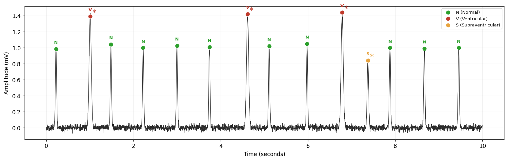
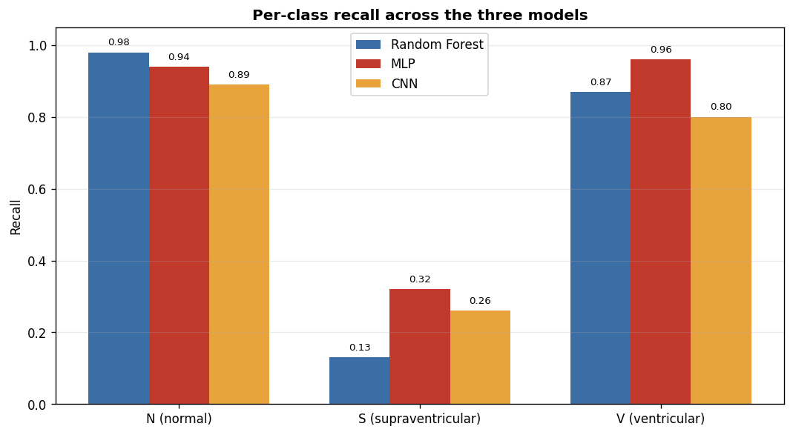

What it does
The full path from a raw ECG signal to a grounded, cited recommendation.
Multi-class beats
Five AAMI EC57 classes (N, S, V, F, Q) rather than a binary normal/abnormal split.
Patient-wise split
Train and test are separated by record, so no patient's beats leak across the boundary.
Real features
Beat morphology, RR intervals, rhythm-normalized RR, and P-wave features — 239 per beat.
Explainable
Every beat is colored by class and the visualizer reports which feature groups drove the decision.
Served & testable
A FastAPI endpoint serves any of the three models; a client sends real beats to it.
Guideline-grounded
Retrieval pulls relevant ACC/AHA passages; a local Llama drafts an educational note with citations.
The signal, read by the model
Each detected beat is classified and marked. Abnormal beats are starred; color encodes the predicted class.

Three models, one honest comparison
All three trained on the same 239 features with a patient-wise split. The interesting story is the hardest class, S.

| Model | Accuracy | Macro F1 | S recall | V recall |
|---|---|---|---|---|
| Random Forest | 0.90 | 0.42 | 0.13 | 0.87 |
| MLP | 0.89 | 0.45 | 0.32 | 0.96 |
| 1D CNN | 0.83 | 0.39 | 0.26 | 0.80 |
MLP is the best-balanced model. On identical features it reached the highest macro F1 and doubled recall on the difficult supraventricular (S) class versus Random Forest, while keeping strong N and V performance.
The bottleneck is the data, not the models. S, F and Q have few examples, and S beats look near-normal in morphology — so the limiting factor is class imbalance and signal ambiguity rather than classifier choice. That is a realistic, defensible conclusion rather than a chased accuracy number.
From beats to a grounded recommendation
The classifier's summary becomes a query into indexed guideline text; a local model drafts the note strictly from the retrieved passages.
↓
query built from the dominant abnormality
↓
vector search over ACC/AHA guidelines → top passages
↓
Llama 3.2 (Ollama, local) → educational note with [Source N] citations
The model is instructed to answer only from the supplied passages and to cite them, so it grounds its note in the guidelines rather than inventing recommendations. Two guidelines are indexed: ventricular arrhythmias (2017) and atrial fibrillation (2023), matching the model's V and S classes.
Run it
Data, trained models and guideline PDFs are generated or downloaded locally — the repository ships only code.
# set up an isolated environment conda create -n ecg python=3.11 -y conda activate ecg pip install -r requirements.txt # train, visualize, serve python train_mlp.py --data_dir /path/to/mit-bih --out_dir artifacts_mlp python visualize_ecg.py --data_dir /path/to/mit-bih --record 208 --artifacts artifacts_mlp # full web app (needs Ollama running llama3.2) streamlit run app_web.pyView the source on GitHub →